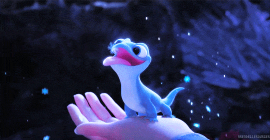

ERA DO REVIVAL (2010 - 2019)
|
A partir de 2010, a Disney retorna às princesas como protagonistas, como foi em A Princesa e o Sapo (adicionando a primeira protagonista negra) e Enrolados. Mas foi em Frozen que a Disney aprendeu com a era anterior e acertou em cheio ao inovar dentro do gênero e criar protagonistas que vão além do final feliz com um par romântico. Foi com Elsa, Anna e Moana que o estúdio trouxe heroínas focadas em suas próprias jornadas e uma abordagem mais moderna (até considerada feminista).
 Outras produções também marcaram o período, como Big Hero 6 (que se baseia nos quadrinhos da Marvel), Zootopia e Detona Ralph. Assim, o estúdio de animação começa a dar forma e criar a sua própria identidade. |